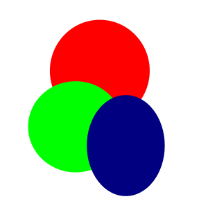

Index
This is the index webpage.
This is a test for some text.
Inline math example: \( \frac{n!}{k!(n-k)!} = \binom{n}{k} \).
Display math example: $$ \frac{n!}{k!(n-k)!} = \binom{n}{k} $$
Some more text.
This is a test for some text.
Inline math example: \( \frac{n!}{k!(n-k)!} = \binom{n}{k} \).
Display math example: $$ \frac{n!}{k!(n-k)!} = \binom{n}{k} $$
Some more text.